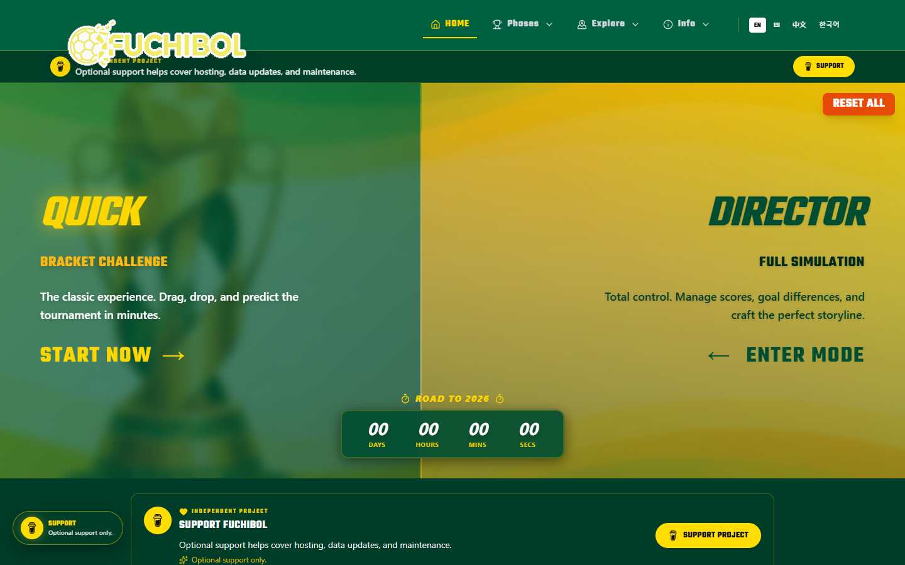
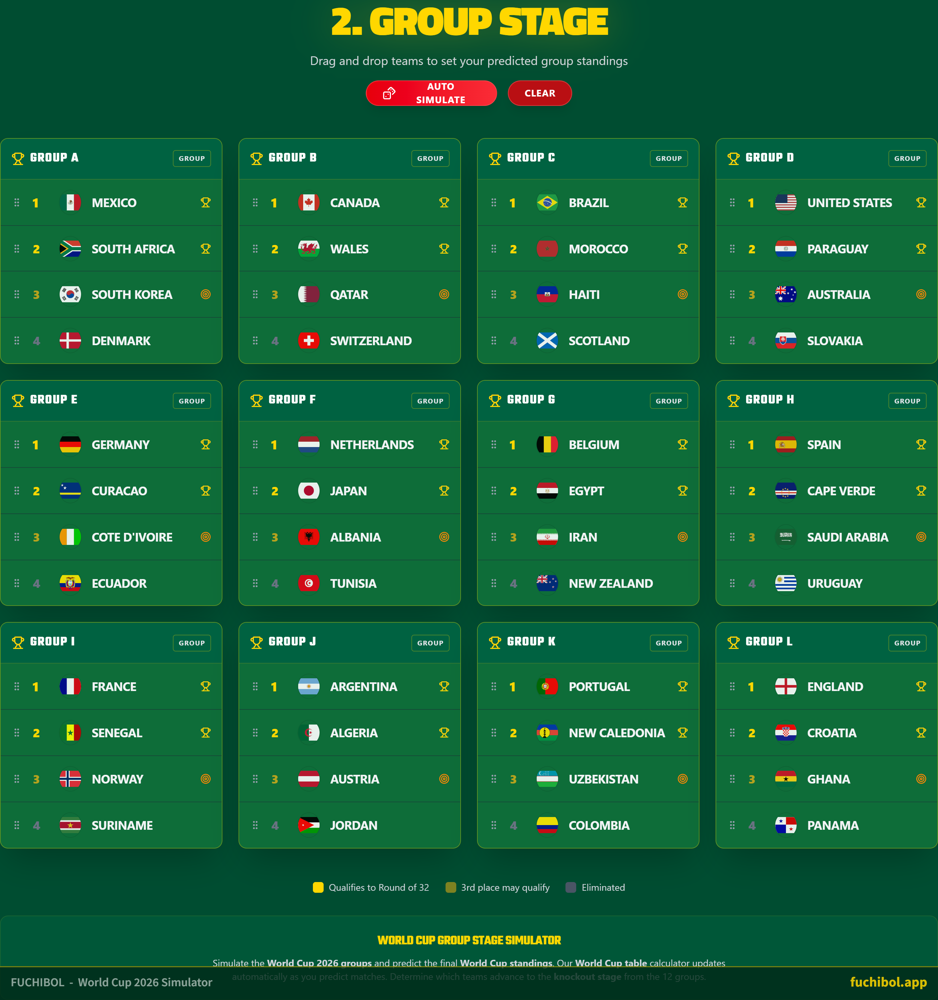
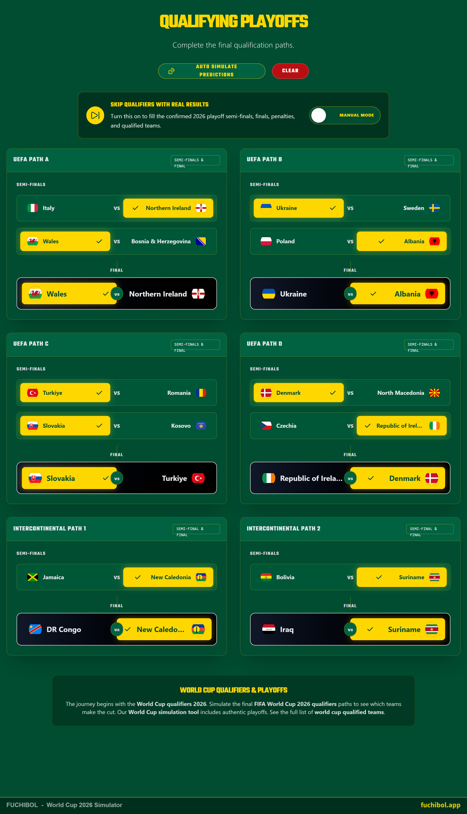

← Todos los proyectos
Proyecto / 05
FUCHIBOL
Tu Mundial, tus decisiones
Simulador interactivo del Mundial 2026 para explorar grupos, cuadros y escenarios posibles de cada selección.

01 / Propósito
Una idea llevada a la práctica.
Proyecto digital personal.
Áreas y tecnologíasReact · TypeScript · Vite
Esta ficha presenta el alcance documentado y material visual seleccionado. El código de desarrollo y los datos privados permanecen fuera de esta vitrina.
02 / Lo que hace
Funciones principales
- Simulación de grupos y fases eliminatorias.
- Herramientas para imaginar rutas de los equipos y compartir predicciones.
- Contenido de consulta sobre sedes, calendario y formato del torneo.
03 / Vista del proyecto
Así toma forma.
Portada capturada del sitio público en octubre de 2026. Las vistas de grupos y eliminatorias corresponden a una demostración de junio de 2026.


04 / Explorar